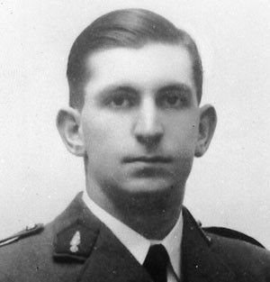

la Rue André-Bollier
André Bollier (1920-1944) est un résistant saint-maurien qui a fréquenté le lycée D’Arsonval entre 1931 et 1935. Après des études à l’Ecole polytechnique, il s’implique dans le mouvement de résistance Combat au péril de sa vie. Il meurt, en effet, dans une attaque de la Gestapo et des miliciens contre son imprimerie clandestine.
